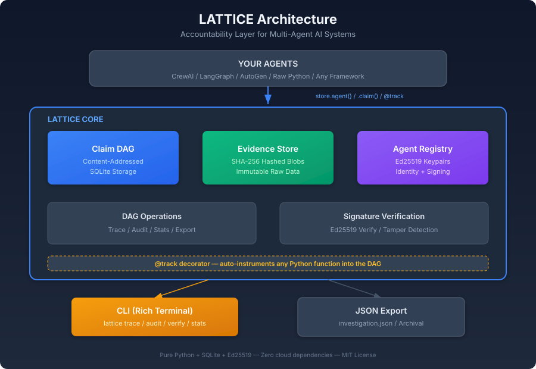
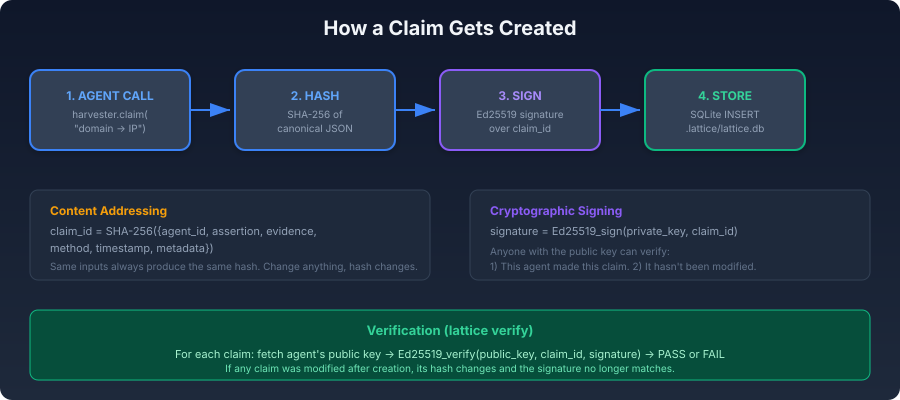
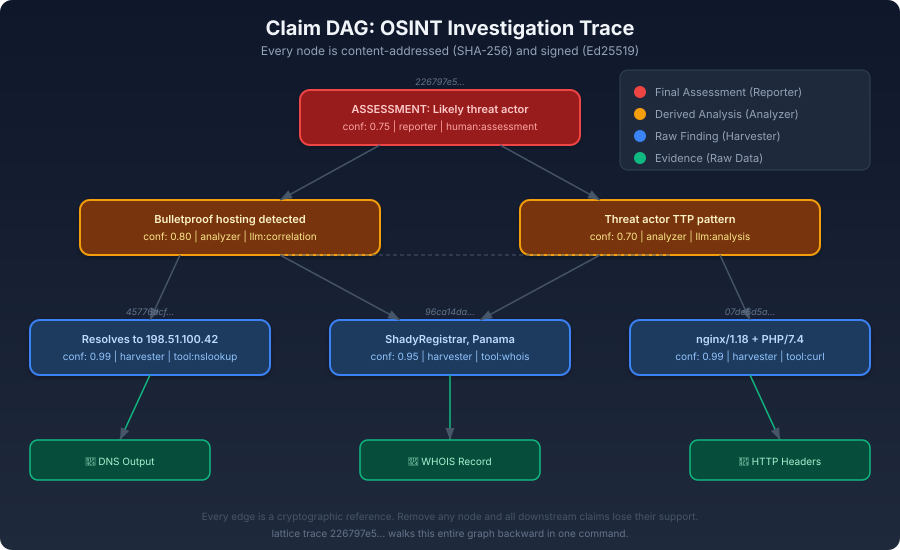
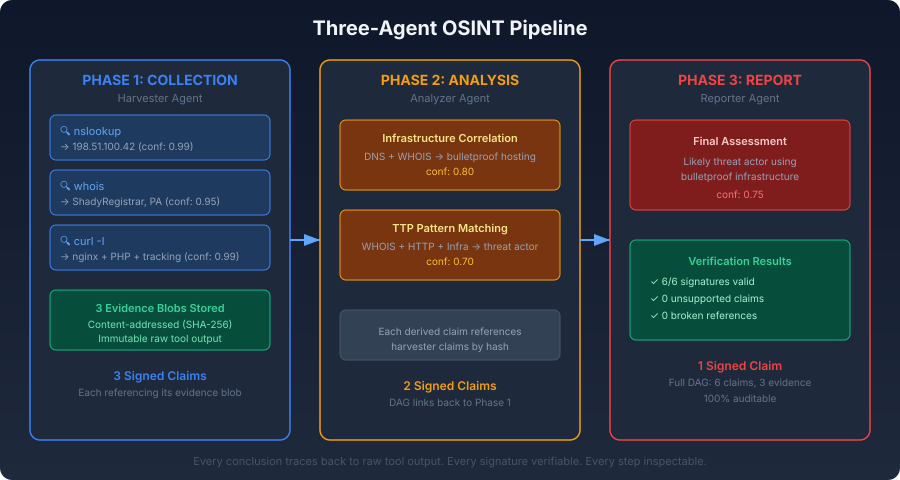

Multi-agent AI systems increasingly drive investigative workflows in cybersecurity, OSINT, and threat intelligence. These systems produce conclusions but cannot explain how they reached them. When an automated pipeline flags a domain as malicious or attributes a campaign to a threat actor, there is no standardized mechanism to trace that conclusion backward through the chain of evidence, verify that no step was fabricated, or assess how sensitive the result is to the removal of any single data point.
This paper introduces LATTICE (Ledgered Agent Traces for Transparent, Inspectable Collaborative Execution), an open-source Python library that addresses this gap. LATTICE provides a lightweight accountability layer that sits beneath any agent framework. Every agent action produces a Claim: a content-addressed, cryptographically signed assertion that references its supporting evidence through a Directed Acyclic Graph. The result is a complete, tamper-evident reasoning chain from final conclusions down to raw tool output.
We describe the architecture, demonstrate its application in a multi-agent OSINT investigation, and argue that accountability infrastructure is a prerequisite for trustworthy multi-agent systems in security-critical domains.
The adoption of multi-agent AI architectures in cybersecurity and intelligence work has accelerated rapidly. Frameworks like LangGraph, CrewAI, and AutoGen allow practitioners to decompose complex investigative tasks across specialized agents: one for data collection, another for analysis, a third for report synthesis. The appeal is clear. Complex investigations involve heterogeneous data sources, require multiple analytical perspectives, and benefit from parallelized execution.
But these frameworks share a fundamental limitation. They are built around orchestration (how agents communicate) rather than accountability (why agents concluded what they did). The output of a multi-agent pipeline is typically a final report or a structured summary. The intermediate reasoning, the evidence that was considered and discarded, the confidence levels at each step, and the identity of the agent responsible for each assertion are lost or buried in unstructured logs.
This matters for three concrete reasons:
Professional credibility. In security consulting, handing a client a report that says "our AI found this vulnerability" without an auditable reasoning chain is professionally inadequate. The client needs to understand the basis for each finding, assess its reliability, and make informed decisions about remediation.
Investigative integrity. In OSINT and investigative journalism, an unverifiable claim is worse than no claim at all, because it carries the false authority of a technical system. Organizations like Bellingcat, Mediapart, and the EU DisinfoLab have established rigorous standards for source attribution and methodology transparency. Automated pipelines that cannot meet these standards are not useful to them.
Regulatory compliance. The EU AI Act (Regulation 2024/1689) requires that high-risk AI systems provide explanations of their outputs. A claim DAG with full provenance and confidence metadata is a natural format for meeting this requirement.
LATTICE addresses this by treating accountability as a system-level property rather than an afterthought.
LangSmith (LangChain), LangFuse, Arize Phoenix, and Weights & Biases Prompts provide monitoring and tracing for LLM-based applications. These platforms focus on operational observability: latency, token counts, error rates, prompt/response pairs. They answer "what happened?" but not "why should we believe this conclusion?" More critically, they are cloud-hosted proprietary services. In security consulting and intelligence work, sending client data and investigation artifacts to third-party APIs is often prohibited by contract, regulation, or basic operational security.
The W3C PROV specification (Moreau & Missier, 2013) provides a general data model for provenance. PROV defines entities, activities, and agents, along with relationships like "wasGeneratedBy" and "wasDerivedFrom." The model is mature and well-specified, but it was designed for data lineage in scientific workflows, not for reasoning chains in adversarial contexts. It does not natively handle confidence distributions, cryptographic verification, or the specific needs of multi-agent AI pipelines.
The intelligence community has developed Structured Analytic Techniques (SATs) such as Analysis of Competing Hypotheses (ACH), Devil's Advocacy, and Red Team/Blue Team analysis (Heuer & Pherson, 2010). These techniques formalize aspects of reasoning relevant to any multi-agent system: maintaining competing hypotheses, challenging assumptions, documenting alternative explanations. However, these techniques exist as human-oriented methodologies, not as machine-enforceable protocols.
| Property | Existing Tools | LATTICE |
|---|---|---|
| Content-addressed immutability | Git (for code, not reasoning) | Every claim hashed by content |
| Cryptographic agent attribution | None in agent frameworks | Ed25519 signature per claim |
| Confidence as first-class primitive | None standardized | Float [0.0, 1.0] on every claim |
| DAG-structured reasoning chains | LangSmith traces (flat, proprietary) | Full backward-traversable DAG |
| Offline / local-first | Most require cloud | Pure SQLite, zero network |
Minimality. LATTICE depends only on Python's standard library plus three packages (cryptography, click, rich). Storage is SQLite. There is no external service, no cloud dependency, no daemon to manage.
Framework agnosticism. LATTICE is not an agent framework. It does not orchestrate agents, manage conversations, or handle tool calls. It records what agents did and why. This means it can sit underneath LangGraph, CrewAI, AutoGen, or raw Python scripts without requiring changes to the agent logic itself.
Verifiability by default. Every Claim is content-addressed (SHA-256) and signed (Ed25519) at creation time. There is no "opt-in" to accountability; it is the default behavior.
Offline-first. The entire system runs locally. Investigation data, agent keys, and the reasoning DAG never leave the machine unless the user explicitly exports them.

Evidence is a content-addressed blob of raw data: tool output, API responses, DNS records, WHOIS results, or any other artifact. Evidence is identified by the SHA-256 hash of its content. Storing the same data twice is idempotent.
Claim is the fundamental unit of the DAG. A Claim represents an assertion made by a specific agent, supported by specific evidence:
| Field | Type | Description |
|---|---|---|
claim_id | string | SHA-256 hash of canonical JSON of all content fields |
agent_id | string | Identifier of the originating agent |
assertion | string | Human-readable statement of what is claimed |
evidence | list[string] | Claim IDs or Evidence IDs this depends on |
confidence | float | Value in [0.0, 1.0] |
method | string | Derivation method (e.g., tool:nslookup, llm:analysis) |
timestamp | float | Unix timestamp of creation |
metadata | dict | Arbitrary key-value pairs |
signature | string | Hex-encoded Ed25519 signature over claim_id |
The claim_id is computed deterministically from the content fields using canonical JSON serialization (sorted keys, no whitespace). Same inputs always produce the same ID. Any modification produces a different hash, making tampering detectable.
Agent is a registered entity with an Ed25519 keypair. When a claim is created, the private key signs the claim_id. Any party with the public key can verify that the claim was produced by that specific agent and has not been modified.

Claims reference other claims and evidence through the evidence field, forming a Directed Acyclic Graph. Leaf nodes are raw evidence blobs. Intermediate nodes are derived claims. Root nodes are final conclusions. Walking backward from any root traverses the complete reasoning chain.

To illustrate LATTICE in practice, we instrument a three-agent OSINT investigation targeting a suspicious domain.

| Agent | Role | Methods |
|---|---|---|
| Harvester | Collector | DNS lookup, WHOIS query, HTTP header inspection |
| Analyzer | Analyst | Infrastructure correlation, TTP pattern matching |
| Reporter | Reporter | Risk assessment synthesis |
import lattice
store = lattice.init(":memory:")
harvester = store.agent("harvester", role="collector")
analyzer = store.agent("analyzer", role="analyst")
reporter = store.agent("reporter", role="reporter")
# Phase 1: Collection
dns_eid = store.evidence("nslookup output: 198.51.100.42")
dns_claim = harvester.claim(
"suspicious-domain.example resolves to 198.51.100.42",
evidence=[dns_eid], confidence=0.99, method="tool:nslookup"
)
# Phase 2: Analysis
infra_claim = analyzer.claim(
"Bulletproof hosting detected (ns1.bulletproof-hosting.example)",
evidence=[dns_claim.claim_id, whois_claim.claim_id],
confidence=0.80, method="llm:correlation"
)
# Phase 3: Report
report = reporter.claim(
"ASSESSMENT: Likely threat actor. Recommend blocking.",
evidence=[infra_claim.claim_id, actor_claim.claim_id],
confidence=0.75, method="human:assessment"
)
# Trace the full chain
chain = store.trace(report.claim_id)All 6 signatures verified. Zero unsupported claims. Zero broken references. The entire reasoning chain is inspectable.
| Operation | Command | Purpose |
|---|---|---|
| Trace | lattice trace <id> | Walk backward from conclusion to evidence |
| Audit | lattice audit | Find unsupported claims, low confidence, broken refs |
| Verify | lattice verify | Check Ed25519 signatures on all claims |
| Stats | lattice stats | Summary metrics for the investigation |
| Export | lattice export | Serialize investigation as JSON |
Backward traceability. Any conclusion can be traced to its supporting evidence. This is essential for client-facing security reports, journalistic fact-checking, and regulatory compliance.
Tamper evidence. Content-addressing and cryptographic signatures make it computationally infeasible to modify a claim without detection. This provides integrity assurance without requiring blockchain or distributed consensus.
Agent attribution. Each claim is tied to a specific agent identity. When a conclusion is wrong, it is possible to identify which agent introduced the error and at what step.
Confidence propagation. In v0.1, confidence values are metadata set by agents. They do not automatically propagate through the DAG. Bayesian belief propagation is mathematically well-defined, but the choice of priors and conditional dependencies is a research question. We plan to add pluggable propagation models in a future version, clearly marked as experimental.
Deterministic replay. LATTICE records what agents concluded, not the exact computational state. Because LLM outputs are non-deterministic, re-running the same agents with the same evidence will generally produce different results. What LATTICE can show is that removing a specific piece of evidence eliminates support for downstream claims (static graph analysis).
Trust in agents. LATTICE verifies that claims were signed by the agents that produced them and have not been modified. It does not verify that agents themselves are trustworthy or that their reasoning is sound. A compromised agent can sign false claims that will pass signature verification.
Auditable hyper-investigation. Le Deuff's concept of hyper-investigation (2019) foregrounds the epistemic and civic dimensions of open-source inquiry. LATTICE provides technical infrastructure for a core requirement: that investigative conclusions be traceable, challengeable, and defensible.
EU AI Act compliance. The EU AI Act requires high-risk AI systems to provide explanations. A claim DAG with provenance and confidence metadata is a natural compliance format.
Structured Analytic Techniques as protocols. The Claim/Evidence/Confidence structure maps naturally to SATs like Analysis of Competing Hypotheses. A future extension could formalize SATs as inter-agent communication protocols.
| Version | Feature | Description |
|---|---|---|
| v0.2 | Framework adapters | Integration plugins for LangGraph, CrewAI, AutoGen |
| v0.3 | Confidence propagation | Pluggable Bayesian propagation modules |
| v0.4 | Web dashboard | Interactive DAG visualization |
| Research | SATs as protocols | ACH and Devil's Advocacy as agent communication schemas |
Multi-agent AI systems in cybersecurity and intelligence need accountability infrastructure the same way software development needs version control. The ability to trace conclusions backward, verify integrity, and attribute decisions to specific agents is not a feature. It is a prerequisite for professional use.
LATTICE provides this infrastructure in a minimal, framework-agnostic, offline-first Python library. It is available under an MIT license at github.com/alibhutto69/lattice.
Cresci, S. (2020). A decade of social bot detection. Communications of the ACM, 63(10), 72-83.
Heuer, R. J., & Pherson, R. H. (2010). Structured Analytic Techniques for Intelligence Analysis. CQ Press.
Le Deuff, O., & Perret, A. (2019). Hyperdocumentation: origin and evolution of a concept. Journal of Documentation, 75(6), 1463-1474.
Le Deuff, O., & Roumanos, R. (2022). Enjeux definitionnels et scientifiques de la litteratie algorithmique. Communication & langages, 211, 133-150.
Moreau, L., & Missier, P. (2013). PROV-DM: The PROV Data Model. W3C Recommendation.
Pacheco, D., et al. (2021). Uncovering coordinated networks on social media. Proceedings of the International AAAI Conference on Web and Social Media.
| Component | Implementation |
|---|---|
| Language | Python 3.8+ |
| Storage | SQLite (WAL mode) |
| Hashing | SHA-256 |
| Signatures | Ed25519 (cryptography library) |
| CLI | Click + Rich |
| External dependencies | 3 packages |
| Lines of code | ~1,850 |
| Test coverage | 41 tests, all passing |
| License | MIT |
| Repository | github.com/alibhutto69/lattice |